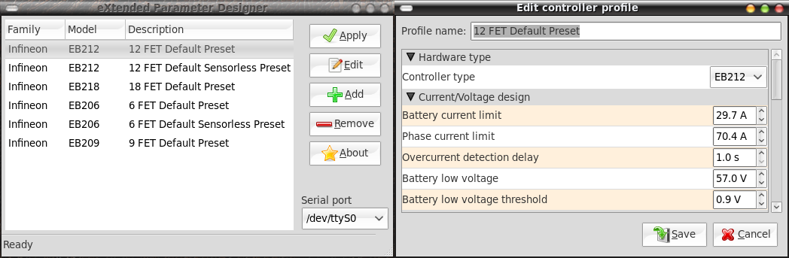

| Download | Development Homepage | Report a bug |
XPD is a cross-platform, open-source rewrite of a tool named Parameter Designer (sometimes also named Keywin e-Bike Lab). The original program was written in Visual Basic, and only the windows executable file was distributed, thus, it is not possible to enhance or port it to other platforms.
I started this project after I discovered how easy was to understand the serial protocol used between the Parameter Designer and the e-bike controller. Besides, I had a dream to be able to change e-bike settings anytime, anywhere. This would be possible if it would be possible to change controller settings using some portable device with serial port capabilities, for example my Nokia N900 phone.
The obligatory screenshot:
I wrote a more or less full description of the e-bike controller protocol using Google docs. Here is a link to the (always) latest version
You may notice several differences between the way how XPD presents the controller parameters, and the way how Parameter Designer used to do it. I'll list here the most important differences, with detailed explanations.
python-2.7.1.msi - This is Python interpreter, install it first.
pygtk-all-in-one-2.22.6.win32-py2.7.msi - This is the GTK+
llibrary (the graphical user interface library) and the Python bindings for it,
install this after Python.
pyserial-2.5.win32.exe - Run this to install the PySerial library
C:\Program Files\
(or any other place at your choice).Also, of course, you must install the drivers for the respective USB-to-UART cable you are using (PL2303, FT232, CP2102 etc).
If you're using the Ubuntu/Debian or Fedora Linux distributions, just download the respective binary package (.deb or .rpm respectively) and install it.
Otherwise,
download the source code tarball (xpd-*.tar.bz2), unpack it somewhere,
enter the xpd-* directory and run "make install" as root. If all pre-requisites are
in place (e.g. Python, PySerial, PyGTK) it will easily install. Now you can run xpd
either via the "Applications" menu (should be in "Electronics" section), or just
run the "xpd" command from terminal or otherwise.
Now it may happen that the "Serial port" combobox in xpd is empty. This means one of two things: either you don't have serial ports at all, or your user account does not have access to serial port devices. Check the access rights on the serial ports:
$ ls -la /dev/tty*S* crw-rw---- 1 root dialout 4, 64 Июн 4 23:55 /dev/ttyS0 crw-rw---- 1 root dialout 4, 65 Май 11 21:00 /dev/ttyS1 crw-rw---- 1 root dialout 4, 66 Май 11 21:00 /dev/ttyS2 crw-rw---- 1 root dialout 4, 67 Май 11 21:00 /dev/ttyS3 crw-rw---- 1 root dialout 188, 0 Июн 5 10:07 /dev/ttyUSB0 crw-rw---- 1 root dialout 188, 1 Июн 5 10:07 /dev/ttyUSB1
Okay, so the "dialout" group has write access to serial ports. Now you just have to add your account to this group ("dialout" in my case), either via administration tools, or quicker via the command line:
$ usermod -a -G dialout
Now relogon, and you should gain access to serial ports.
Another problem that may happen is that some shitty tools may put various trash
into the serial ports at random times. For example, openct contains a driver for
smart card readers attached to serial ports (/lib/udev/openct_serial).
To simulate "plug-and-pray" this shit often writes to serial port various strings,
waiting for an answer from the device. If you get unexpected problems (e.g. xpd
starts talking with the controller then locks, etc), you may try to catch the
S-O-B with the pants down by using the command:
fuser -v /dev/ttyUSB0 # or whatever serial port you are using
This command will list the processes that use a file (or device). I recommend deinstalling the openct package, most people don't need it anyway.
The basic usage of the program should be quite obvious for anybody who can handle a computer mouse. The main program window displays a list of existing controller profiles, you may create, edit, delete and apply profiles. In the bottom-right corner of the window you may select the serial port to which you connected the controller programming cable.
The controller looks for profiles in two directories: first, this is the program data directory (/usr/share/xpd/ on Linux, share/ on Windows), and second, in the user's home data directory (~/.local/share/xpd/ on Linux, "C:\Documents and Settings\Username\My Documents\xpd" on Windows).
Also on Linux I would suggest to enable icons-on-buttons (which is now disabled
by default in GNOME, and the interface settings page was removed too,
it was argued that icons on buttons are "bad design decisions").
So you'll have to launch gconf-editor, navigate to
/desktop/gnome/interface/ folder and enable the
buttons_have_icons setting.
XPD is licensed under the terms of GNU General Public License version 3 or later.
So far this is a solo project, so the only contributor for now is:
Also I would like to thank the BerliOS project for hosting all my small public projects.